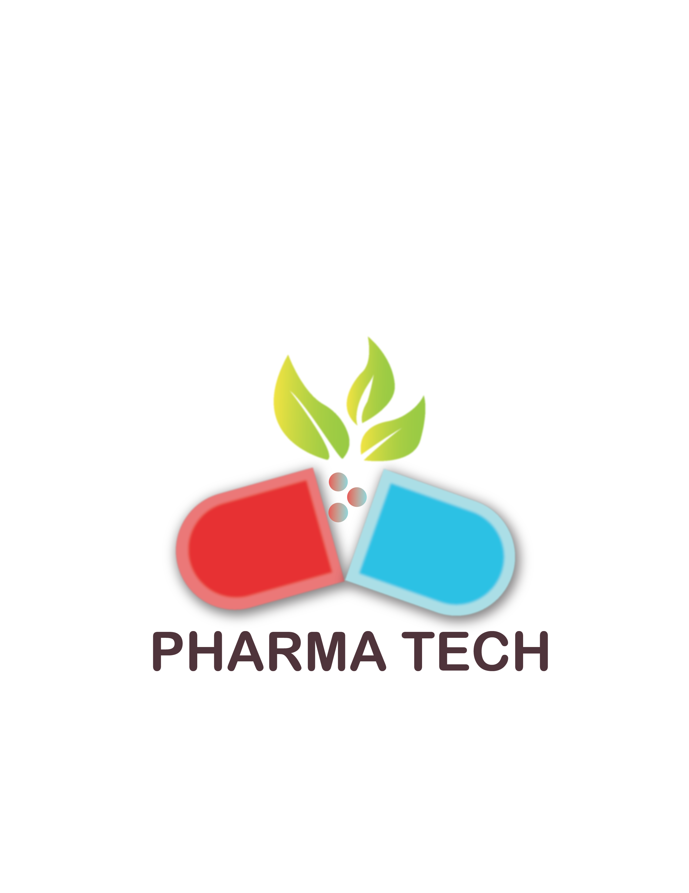
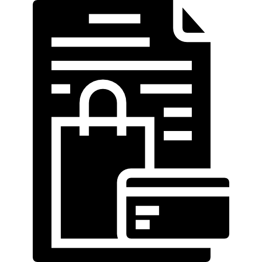

<!DOCTYPE html>
<html>
    <head>
        <meta charset="utf-8">
        <title>PharmaTech</title>
        <link rel="stylesheet" href="style1.css">
        <link rel="stylesheet" href="styleofAboutUs.css">
        
    </head>
</html>
<body>
    <div class="header">
        
        <form>
          <label for="search"></label><br>
          <input type="text" id="search" name="search"required placeholder="Search.."><br><br>
          <a href="myacc" id="ac">My Account</a> <br> <br>
          
          </form>
   </div>
      <br> <br>
      <div class="nav">
        <a class="active" href="(2)home.html">Home</a>
        <a href="#contact">Contact Us</a>
        <a href="#about">About Us</a>
        
      </div>
      <br>
      <h1>
        About Our Medical Store – an online pharmacy in Pakistan
    </h1>
    <div class="about">
        
        <h2>Some Words About Us</h2>
        <p class="p1">Online Medical Store Pakistan is committed to deliver its customers the very best prices on the best brands and original medicines in Karachi, Pakistan. We are committed to provide the best pharmacy service online. Like Online Medical Store no other online pharmacy in Pakistan can match our level of customer service, and industry-only policies including medicine request for non-available products, free delivery on orders above 3000 and price guarantee. </p>
        <h2>What we really do?</h2>
        <p>Online Medical Store is an full service online pharmacy in Pakistan delivering health-care products nationwide. You can place your order on phone or our intuitive mobile application to get your medicines delivered at your doorsteps.</p>
        <h2>Our Assets</h2>
        <p>Online Medical Store in Pakistan proud of their team members who are committed to deliver medicines through home delivery and the service that they offer to our customers. They made this dream of an online pharmacy in Pakistan make happen.</p>
        <h2>What can we do for you ?</h2>
        <p>We are in introductory phase and delivering orders placed between 10:am to 07:pm</p>
        <h4>Best Quality</h4>
        <p>We are committed to deliver best quality products at your convenience</p>
        <h4>Fastest Delivery</h4>
        <p>We aims to deliver all orders with in 2-3 working days after order confirmation.</p>
        <h4>Customer Care</h4>
        <p>You can reach us by filling up a form on our contact  page or alternatively you can also send us an email at pharmatech@medicalstore.com.pk.

            We are also available over phone/whatsapp +92-99887766</p>
        <h2>Our Vision</h2>
        <p>Deliver Health at doorsteps.

            We believe that access to medical facilities is access to health</p>    
        </div>

  <div class="b">
        <div class="box">
         +92 9988776655 <br> +92 2233665544 
        </div>

        <div class="box1">
            
           available from 09:00am – 7:00pm
        </div>
 
        <div class="box2">
            Address Street abc, block#10-A,<br> Near Resturant,<br> Karachi, Pakistan<br>

Email order@medicalstore.com.pk
        </div>
        </div>
        <footer>
             <div class="imt">
                <ul>
                <li><div> <p>ABOUT US</p> <span>Products listed on PharmaTech.com.pk <br>are 100% genuine and sourced <br>from licensed pharmacies.</span></div></li>
                <li> <div><p>CONTACT US</p><ul>
                    <li>+92XX-XXXXXX</li>
                    <li>+92XX-XXXXXX</li>
                    <li>+92XX-XXXXXX</li></ul></div></li>
                <li><div> <p>TERMS & CONDITIONS</p><span>Welcome, again, to PharmaTech.com. It is strongly <br>recommended that you read and understand the<br> “Terms of Use’’, as by accessing to this Website you’re<br> bound by the same and acknowledge that it constitutes as part<br> of the procedure followed by PharmaTech. If you don’t agree then, <br>unfortunately, you won’t be able to utilize our Website’s services.</span></div></li>
                
                </ul>
            
            
            </div>
            <div class="social">
                <center><h4>DO FOLLOW US</h4></center>
                <ul>
                <li> </li>
                <li> </li>
                <li> </li>
                </ul>
            </div>
            
        </footer>
</body>